리눅스마스터-1급 (2006-09-03 기출문제)
1과목: 리눅스 실무의 이해
1. 운영체제의 발전 과정의 순서를 바르게 나열한 것은?
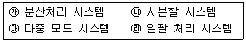
- ㉮ → ㉯ → ㉰ → ㉱
- ㉮ → ㉱ → ㉰ → ㉯
- ㉱ → ㉯ → ㉮ → ㉰
- ㉱ → ㉯ → ㉰ → ㉮
(정답률: 29%)

2. 하나의 물리적인 컴퓨터 모니터로 여러 개의 가상 화면을 이용하여 서로 다른 작업을 수행할 수 있도록 하는 것을 무엇이라 하는가?
- 캐시 메모리(cache memory)
- 가상 메모리(virtual memory)
- 가상 콘솔(virtual console)
- 스와핑(swapping)
(정답률: 63%)
3. 리눅스와 같이 소프트웨어를 자유롭게 배포할 수 있고 소스 코드를 수정하고 재배포할 수 있으나 원래의 배포기준을 그대 로 유지시켜야 하는 개념은?
- 상용 소프트웨어(commercial software)
- 카피레프트(copyleft)
- 셰어웨어(shareware)
- 프리웨어(freeware)
(정답률: 34%)
4. 현재 일반 사용자용 운영체제의 시장 점유율이, 리눅스가 윈도우즈보다 낮은 이유로 가장 적당한 것은?
- 리눅스가 윈도우즈보다 성능 면에서 낮다.
- 일반 사용자가 편리하게 사용할 수 있는 응용프로그램이 부족하다.
- 운영체제의 가격이 비싸다.
- 대형 컴퓨터용으로 설계되어 일반 컴퓨터용으로 부적절하다.
(정답률: 71%)
5. 리눅스 개발에 영향을 주었던 오픈소스 운영체제인 교육용 유닉스는?
- HP-UX
- MINIX
- XENIX
- MULTICS
(정답률: 62%)
6. 다음에서 리눅스 부트 로더가 아닌 것은?
- LILO
- GRUB
- MBR
- Loadlin
(정답률: 42%)
7. 리눅스 명령어들을 저장하고 있는 디렉토리가 아닌 것은?
- /bin
- /sbin
- /usr/man
- /usr/sbin
(정답률: 77%)
8. 리눅스를 즉시 재부팅시키기 위한 명령으로 적당한 것은?
- shutdown -h now
- shutdown -r now
- shutdown -r +5
- shutdown -k
(정답률: 72%)
9. 리눅스 파일시스템에서 파일의 이름을 제외한 해당 파일의 모든 정보를 가지고 있는 것은?
- 슈퍼블록(super block)
- 아이노드(Inode)
- 디렉토리 블록(Directory block)
- 데이터 블록(Data block)
(정답률: 79%)
10. 리눅스의 GUI를 지원하는 데스크탑 환경으로 맞게 짝지어진 것은?
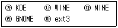
- ㉮, ㉯
- ㉰, ㉱
- ㉱, ㉲
- ㉮, ㉱
(정답률: 84%)
11. 윈도우 매니저에 대한 설명 중 틀린 것은?
- 윈도우를 관리하는 프로그램으로 GUI를 제공 한다.
- 메뉴판 구성, 스크롤바, 아이콘, 마우스버튼의 작동을 결정한다.
- 종류는 twm, fvwm, WindowsMaker, konqueror, 노틸러스가 있다.
- 모든 사용자를 위한 기본 윈도우 매니저를 설정하려면 /etc/sysconfig/desktop 파일을 편집 한다.
(정답률: 32%)
12. 쉘(shell)에 대한 설명으로 잘못된 것은?
- 쉘은 사용자와 운영체제 사이를 연결하여 주는 유틸리티 프로그램이다.
- 쉘은 커널과 직접 연결되어 있으며 컴파일러 방식이다.
- 쉘은 DOS의 command.com 및 윈도우즈의 탐색기와 같은 역할을 한다.
- 종류로는 sh, csh, ksh, bash 등이 있다.
(정답률: 35%)
13. 현재 사용 중인 sh 쉘을 csh 쉘로 변경하고자 할 때의 명령으로 맞는 것은?(오류 신고가 접수된 문제입니다. 반드시 정답과 해설을 확인하시기 바랍니다.)
- su csh
- cp sh csh
- sh
- csh
(정답률: 30%)
14. 프로세스의 개념에 대한 설명으로 틀린 것은?
- 특정 기능을 수행하기 위한 명령어의 집합을 말한다.
- 일반적으로 실행 중인 프로그램을 말한다.
- 커널에 등록되고 커널의 관리하에 있는 작업(job)을 말한다.
- 각종 자원을 요청하고 할당 받을 수 있는 개체를 말한다.
(정답률: 43%)
15. 프로세서의 보편적인 스케줄링 기준으로 잘못된 것은?
- 입출력 위주보다 연산 위주인 프로세스의 우선 순위가 낮다.
- 실행시간이 긴 프로세스는 짧은 실행시간의 프로세스보다 낮은 우선순위를 갖는다.
- 사용자 가 임의로 프로세스의 우선순위의 수준을 정할 수 있다.
- 텍스트 편집기의 우선순위는 대체로 낮은 편이다.
(정답률: 31%)
16. 호스트 네임을 가지고 실제 IP 주소로 번역하는 것은?
- DNS
- FTP
- HUB
- WWW
(정답률: 73%)
17. DNS를 참조하지 않고 IP주소를 알 수 있도록 도메인 이름과 IP주소를 저장하고 있는 파일은?
- /etc/resolv.conf
- /etc/sysconfig/network
- /etc/fstab
- /etc/hosts
(정답률: 15%)
18. ifconfig를 이용하여 서브넷 마스크 값을 255.255.255.128로 세팅하였다. 이 서브넷에서 호스트의 주소로 사용 가능한 IP주소의 개수는?
- 256
- 192
- 126
- 64
(정답률: 50%)
19. 회사에서 보유한 200대의 컴퓨터를 인터넷에 연결하고자 한다. 이 회사는 어느 클래스를 사용하는 것이 적당한가?
- A 클래스
- B 클래스
- C 클래스
- D 클래스
(정답률: 72%)
20. traceroute 명령을 이용하여 얻을 수 없는 정보는?
- 목적지까지 경유하는 홉(Hop)의 개수
- 목적지까지 경유하는 홉(Hop)의 주소
- 목적지까지 경유하는 홉(Hop)의 소유자
- 목적지까지 소요된 경과 시간
(정답률: 70%)
2과목: 리눅스 시스템 관리
21. 리눅스에서 메모리가 부족할 때 디스크의 일부분을 RAM처럼 이용하는 방식을 가리키는 것은?
- 스와핑(swapping)
- 페이징(paging)
- 세그먼테이션(segmentation)
- 버츄얼 머신(virtual machine)
(정답률: 77%)
22. 컴퓨터의 마더보드(mother board) 버스와 디스크 장치 간의 인터페이스 방식으로 사용할 수 있는 것이 아닌 것은?
- IDE
- EIDE
- SCSI
- ISA
(정답률: 54%)
23. 리눅스 시스템에 현재 연결된 장치의 구성을 보고자 할 때 참조할 수 있는 디렉토리는?
- /proc
- /mnt
- /boot
- /root
(정답률: 24%)
24. 리눅스가 설치되어 있는 컴퓨터의 CPU에 대한 정보를 볼 수 있는 명령은?
- more /proc/cpuinfo
- ls /proc/cpuinfo
- edit /proc/cpuinfo
- make /proc/cpuinfo
(정답률: 43%)
25. X 윈도우 사용 중 마우스가 작동되지 않아서 키보드의 단축키를 이용하여 가상터미널을 사용하고자 한다. 알맞은 단축키는?
- Ctrl + Alt + F7
- Ctrl + Alt + F1
- Ctrl + Alt + ←
- Ctrl + D
(정답률: 53%)
26. X 윈도우 GUI 환경에서 커널 컴파일을 위한 커널 설정을 할때 사용하는 명령은?
- make config
- make menuconfig
- make xconfig
- make module
(정답률: 34%)
27. 커널 컴파일 과정 중 압축된 커널 이미지를 생성하는 과정은?
- make dep
- make clean
- make bzImage
- make module
(정답률: 34%)
28. 리눅스 시스템에 새로운 하드디스크를 추가 장착하여 예전 디스크의 전체 파일을 복사하려고 한다. 다음은 이를 위한 과정이다. 틀린 것은?
- fdisk /dev/hda를 이용하여 새로운 디스크 파티션을 만든다.
- mkfs.ext3 /dev/hda1를 하여 디스크를 포맷 한다.
- mount -t ext3 /dev/hda1 /new-disk를 하여 디스크를 디렉토리에 마운트 한다.
- cp -r / /new-disk하여 새로운 디스크로 파일을 복사한다.
(정답률: 64%)
29. 리눅스에서 지원하는 터미널 정보가 저장되어 있는 파일은?
- /etc/termcap
- /etc/mnt
- /etc/services
- /etc/printcap
(정답률: 48%)
30. 플로피 디스켓에 파일시스템을 생성시키는 명령으로 알맞은 것은?
- fdisk /dev/fd0
- fsck /dev/fd0
- mkfs.ext3 /dev/fd0
- umount /dev/fd0
(정답률: 40%)
31. root에서 일반유저로 변환할 때 사용하는 명령어로 알맞은 것은?
- change
- su
- usermod
- chown
(정답률: 63%)
32. 리눅스 시스템을 사용하는 모든 사용자들은 패스워드 파일을 가지고 있으며, 이 사용자들은 특정한 그룹에 가입되어 있다. 이러한 정보를 기록하고 있는 파일 두 가지를 올바르게 명시한 것은?
- /etc/passwd, /etc/named.conf
- /etc/group, /etc/named.conf
- /etc/passwd, /etc/group
- /etc/group, /etc/login.defs
(정답률: 60%)
33. 사용자가 입력한 명령어를 읽어서 해석하는 프로그램으로 명령어 해석기(Command Processor)라고 불리는 것은?
- 그룹
- 쉘
- 유틸리티
- 커널
(정답률: 82%)
34. 다음 중 그룹 계정에 대한 설명 중 잘못된 것은?
- 그룹별로 할당된 권한으로 그룹에 속한 모든 계정에 그룹의 권한을 적용할 수 있다.
- 그룹의 추가는 groupadd 명령을 사용하여 수행 할 수 있다.
- 하나의 사용자의 계정이 복수개의 그룹계정에 포함될 수 있다.
- 그룹이 삭제되더라도 그에 포함된 사용자의 그룹 권한은 그대로 유지된다.
(정답률: 53%)
35. 다음 중 chgrp 명령어에 대한 설명으로 가장 적절한 설명은?
- 주어진 파일의 그룹을 지정한 그룹으로 바꾼다.
- chgrp 명령어 인자로서는 그룹 이름만이 가능하다.
- 특정 사용자가 만든 파일이나 디렉토리는 그의 소유가 되나 그가 속한 기본 그룹이 소유 그룹이 되지는 않는다.
- 파일의 소유자나 슈퍼 유저만이 파일의 그룹 소유권을 바꿀 수 있는 것은 아니다.
(정답률: 37%)
36. 사용자에 대한 패스워드의 만료 기간 및 시간 정보를 변경하는 명령어는?
- chown
- chage
- cron
- chgrp
(정답률: 50%)
37. adduser명령어의 옵션 중 설명이 잘못된 것은?
- –u : 사용자id를 지정함. 기본적으로 기 시스템에 할당된 숫자보다 높은 숫자를 사용한다.
- –f : 뒤에 지정한 수는 앞으로 이 계정이 만료되는 날짜를 의미한다.
- –s : 사용할 쉘의 완전한 경로를 지정한다.
- –c : 패스워드 파일을 컴파일 할 때 사용한다.
(정답률: 46%)
38. 지워진 파일을 복구할 때 취할 수 있는 행동으로 가장 관련이 없는 것은?
- 덤프된 디렉토리를 분석한다.
- 지워진 파일이 있는 파티션을 언마운트한다.
- 지워진 파일이 있는 파티션에 파일을 복사하여 그 파일이 정상 작동하는지 확인한다.
- 지워진 디렉토리의 inode 번호들을 찾는다.
(정답률: 16%)
39. 그래픽 로그인 프롬프트를 띄우는 용도로 사용 되는 일반적인 실행 레벨로 알맞은 것은?
- Runlevel 0
- Runlevel 2
- Runlevel 5
- Runlevel 6
(정답률: 55%)
40. 프로세스가 종료될 때 일련의 사건이 아닌 것은?
- 모든 신호를 수용 처리 한다.
- 프로세스 그룹에게 시그널 보냄
- 문맥 교환
- 부모 프로세스에 자식 프로세스 종료를 알림
(정답률: 32%)
41. top명령어에 대한 설명으로 가장 적절한 것은?
- CPU 프로세서를 정렬하는 명령어이다.
- 현재 실행중인 작업을 사용자와 프로세스 ID로 보여주는 명령어이다.
- 각 프로세스의 CPU 사용률과 메모리 사용률을 보여준다.
- 프로세스를 종료시키라는 명령어이다.
(정답률: 58%)
42. 다음 중 fork 시스템 호출의 특징이 아닌 것은?
- 부모 프로세스와는 단지 PID와 PPID만 다른 동일한 자식 프로세스를 만든다.
- 파일 락(Lock)과 시그널 펜딩(Pending)은 상속 받지 않는다.
- 성공시 자식프로세스의 PID가 부모프로세스에 반환된다.
- fork() 실패시 반환값 0이 부모프로세스에게 반환된다.
(정답률: 27%)
43. RPM(Redhat Package Manager)의 용도에 대한 설명으로 가장 적절치 않은 것은?
- 패키지 정보 검색
- 업그레이드 기능
- 패키지 검증
- 패키지 수동 설치 및 제거
(정답률: 20%)
44. RPM 파일을 만드는 절차와 상관이 없는 것은?
- /etc/passwd가 있는지 확인한다.
- 정확하게 빌드하기 위해서 소스에 필요한 패치를 가한다.
- 모든 것이 정확한 위치에 있는지 확인한다.
- 보통 rpm은 바이너리와 소스 모두 만든다.
(정답률: 20%)
45. makefile의 내부 구조에 대한 설명으로 틀린 것은?
- 목표(target), 의존관계(dependency), 명령(command)으로 이루어진 기본 규칙들이 나열되어 있다.
- 목표부분은 명령(command)이 수행되어 나온 결과 파일을 지정한다.
- 쉘에서 쓸 수 있는 제한된 몇몇 명령어만 사용 가능하다.
- bash에 기반한 쉘 스크립트도 지원한다.
(정답률: 37%)
46. 다음 중 gcc의 옵션에 대한 설명으로 가장 잘못된 것은 무엇인가?
- –L 옵션은 여러 번 줄 수 있다.
- –o 옵션은 출력(output) 파일명을 정한다.
- –I 옵션은 여러 번 사용할 수 없다.
- –l(소문자 L) 옵션은 링크할 라이브러리를 명시해 준다.
(정답률: 29%)
47. 리눅스 시스템의 파일 종류 세 가지가 아닌 것은?
- 정규파일 (Regular File)
- 디렉토리 (Directory)
- 보안파일 (Security File)
- 특수파일 (Special File)
(정답률: 46%)
48. mount 명령에 대한 옵션에 대한 설명 중 틀린 것은?
- –v : 자세한 출력 모드이다.
- –f : 실제 시스템 호출은 하지 않고 마운트 할 수 있는지 점검한다.
- –r : 읽기만 가능하도록 마운트 한다.
- –w : 쓰기만 가능하도록 마운트 한다.
(정답률: 10%)
49. 파일이나 디렉토리의 리스트를 출력해 주는 명령어는?
- fdisk
- ls
- quota
- fsck
(정답률: 61%)
50. 소스 코드 컴파일과 관련된 유틸리티의 설명으로 적절치 않은 것은?
- make는 일정한 규칙을 준수하여 만든 파일의 내용을 읽어서 목표 파일을 만들어 낸다.
- gcc –v 를 입력하면 gcc의 버전을 보여준다.
- gzip은 압축을 하거나 압축을 풀 때에 사용 한다.
- tar –c 를 입력하면 묶음 실행과 동시에 gzip으로 압축한다.
(정답률: 41%)
51. 아래 리눅스의 기본적인 로그파일 구분에 대한 설명으로 틀린 것은?
- Access 로그 : 시스템 파일 접근시의 로그
- 시스템 로그 : 리눅스 커널로그 및 주된 로그
- 부팅로그 : 시스템 부팅시의 로그
- 보안 로그 : inetd에 의한 로그
(정답률: 알수없음)
52. 리눅스 배포판에서 장착식 인증 모듈이라고 불리워지는 사용 자 인증 의 핵심이며, 사용자 정보의 저장 방법 과 관계없이 프로그램들이 투명하게 사용자를 인증하게 하여 혼잡함을 제거한 것은?
- SSH
- pam
- sudo
- tripwire
(정답률: 58%)
53. pam구성 파일의 구성토큰이 아닌 것은?
- type
- account
- control
- public
(정답률: 27%)
54. 아래의 명령은 무엇을 실행하기 위한 것인가?
- 데이터베이스 갱신
- 계정 보안 검사
- 무결성 검사
- 폴리시 파일 갱신
(정답률: 48%)
55. COPS(Computer Oracle and Password System)의 기능이 아닌 것은?
- 파일, 디렉토리 및 장치 파일에 대한 퍼미션 점검
- /etc/passwd, /etc/group 파일 내용 점검
- /etc/hosts.equiv 파일 내용 점검
- 중요 문제점들에 대해서 그것을 올바르게 수정
(정답률: 46%)
56. 시스템을 설치한 후 사용자들이 시스템을 사용해 보기 전에 시스템의 모든 파일들과 프로그램을 백업하는 것으로 가장 적절한 것은?
- System Backup
- A Day-zero Backup
- 다단계 백업
- Incremental Backup
(정답률: 40%)
57. 다음 중 백업관련 명령어가 아닌 것은?
- cpio
- taper
- rebuild
- rdist
(정답률: 알수없음)
58. 다음 중 taper에 대한 설명으로 옳지 않은 것은?
- 마그네틱테이프에 대한 원격 접근을 제공하는 모듈이다.
- 순환하는 디렉토리 선택 기능도 제공된다.
- 디렉토리 사이를 쉽게 이동할 수 있다.
- SCSI, ftape, zftape, 이동 드라이브를 지원한다.
(정답률: 32%)
59. 다음 중 백 업 계획을 결정하기 위 한 중요한 요소로 보기 힘든 것은?
- 사용하는 백업 기기의 종류
- 합리적인 시스템 파일 재배치
- 백업할 자료의 가치
- 백업하기 위하여 필요한 시간과 재정
(정답률: 38%)
60. 다음 중 dump의 단점이 아닌 것은?
- 여러 개의 테이프에 백업이 불가능하다.
- 모든 파일 시스템은 개별적으로 dump되어야 한다.
- 로컬 머신만이 dump될 수 있다.
- NFS 파일 시스템을 dump할 수는 없다.
(정답률: 13%)
3과목: 네트워크 및 서비스의 활용
61. ICMP, UDP, TCP의 데이터 패킷들을 사용해 서버에 많은 양의 네트워크 트래픽을 전송함으로써, 사용자들이 사이트에 접근하지 못하도록 자원을 고갈시키는 공격을 무엇이라 하는가?
- worm 백도어
- DoS공격
- 트로이 목마
- Buffer overflow공격
(정답률: 50%)
62. 단순한 접근 제어 기능을 넘어서 침입의 패턴 데이터베이스와 Expert System을 사용해 네트워크나 시스템의 사용을 실시간 모니터링하고 침입을 탐지하는 보안 시스템은 무엇인가?
- IDS
- SYN
- DMZ
- VPN
(정답률: 59%)
63. 방화벽 시스템 구축시 고려 사항이 아닌 것은?
- 손실 제어
- 위험 지역
- 시스템 실패 환경
- 내부 사용자 간의 통신량
(정답률: 39%)
64. VPN에 대한 설명으로 가장 적절치 않은 것은?
- 인터넷망을 마치 전용선으로 사설망을 구축한 것처럼 사용하는 방식이다.
- 궁극적으로 기존의 사설망보다 비용이 증가 된다.
- 공중망을 이용하기 때문에 사용자가 장소를 옮기더라도 유연하게 통신망을 사용할 수 있다.
- 보안성이 사설망에 비해 떨어진다는 점이 큰 단점이다.
(정답률: 44%)
65. IDS의 기술적 구성요소가 아닌 것은?
- 정보 수집 단계
- 정보 확대 단계
- 분석 및 침입 탐지 단계
- 보고 및 조치 단계
(정답률: 70%)
66. 다음은 웹서비스의 작동원리에 대한 설명이다. 이 중 틀린 것은?
- 호스트로 접속하고, 그곳에 있는 문서를 사용자의 호스트로 가져와서 보여주는 역할을 하는 프로토콜은 HTTP(HyperText Transfer Protocol) 이다.
- 서버는 이미 예약된 80번 포트를 기본으로 열어놓고 클라이언트의 접속을 기다린다.
- 웹서버는 브라우저로부터 요청을 받아 요청된 문서를 반환하는 역할을 한다.
- 서버와 클라이언트 연결시 UDP프로토콜을 기본 사용한다.
(정답률: 50%)
67. 웹서버인 아파치를 설치하였더니 /usr/local/apache 아래에 다음 디렉토리가 생성되었다. 각 디렉토리에 대한 설명 중 옳지 않은 것은?
- bin : 아파치 사용시에 필요한 유틸리티들이 들어 있다.
- conf : 환경설정 파일과 pid파일이 들어 있다.
- icons : 아파치 서버에 사용되는 아이콘들이 들어 있다.
- logs: 로그파일들이 들어 있다.
(정답률: 43%)
68. 다음은 아파치 설정파일(httpd.conf)의 일부이다. 웹 서버가 클라이언트에게 전달할 HTML문서를 실행하는 순서로 바르게 표기한 것은?
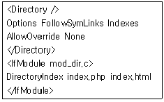
- 디렉토리의 파일 목록 - index.html - index.php
- index.php - 디렉토리의 파일 목록 - index.html
- index.php - index.html - 디렉토리의 파일 목록
- 디렉토리의 파일 목록 - index.php - index.html
(정답률: 14%)
69. 다음은 아파치 서버의 기본 로그 포멧을 지정한 것이다. 다음 설명 중 틀린 것은?
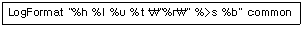
- %h는 호스트이름을 의미한다.
- %l는 원격 로그 이름을 의미한다.
- %u는 사용자인증에 사용된 이름을 의미한다.
- %r는 원격지의 호스트이름을 의미한다.
(정답률: 37%)
70. 아파치의 주 명령어인 httpd의 옵션들을 설명한 것이다. 이중 틀린 것은?
- -v : httpd의 버전을 표시한다.
- -? : httpd의 옵션을 보여준다.
- -X : 내부적인 테스트를 위해 싱글프로세스 모드로 실행시킨다.
- -d : 환경설정파일을 지정해서 시작한다.
(정답률: 20%)
71. 다음과 같이 아파치 설정 파일을 설정했다 . apache.ihd.or.kr 도메인을 브라우저의 주소창에 입력했을 때 결과는?(단, /home/ihd/apache 디렉토리에는 index.html파일이 존재한다.)
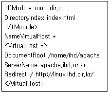
- /home/ihd/apache/index.html 파일 내용을 보여준다.
- 설정오류가 발생하여 아파치 시작이 되지 않는다.
- linux.ihd.or.kr 사이트로 포워딩 된다.
- 설정경고가 발생하여 위 가상호스트는 무시 된다.
(정답률: 24%)
72. 웹서버인 아파치에 웹 프로그래밍 언어인 PHP를 연동 설치하였다. 확장자가 php인 파일을 php 인터프리터에서 실행시키기 위한 설정은?
- AddType application/x-httpd-php .php
- AddExec application/x-httpd-php .php
- InstallType application/x-httpd-php .php
- InstallType application/php .php
(정답률: 43%)
73. 최근 들어 스니핑 등 보안 문제로 인해 보안이 강화된 HTTPS를 사용하려 한다. 다음 설명 중 잘못된 것은?
- HTTPS는 기본 443포트를 사용한다.
- 브라우저에서 https://도메인 으로 접속한다.
- 서버에서 임의 생성한 인증서 및 비밀키로 어느 정도 보안을 유지할 수 있다.
- 아파치 설정파일(httpd.conf)에 SSL 설정 하고, apachectl start 하면 바로 사용 가능하다.
(정답률: 50%)
74. 서버관리자 홍길동은 신규 서버에 MySQL을 설치하였다. 설치 후 기본 DB(mysql, test)를 생성하려 한다. 다음 중 어떤 명령어를 사용해야 하는가?(MySQL 4.0.XX)
- mysqld_safe &
- mysql_install_db
- mysqladmin -u root -p init_db
- init_db_table
(정답률: 36%)
75. 삼바(samba)서버의 설정파일에서 주석으로 사용 할 수 없는 것은 다음 중 어느 것인가?
- # 내용
- // 내용
- ; 내용
- /* 내용 */
(정답률: 18%)
76. 삼바 서버의 환경설정 파일에서 사용하는 지시자 중 클라이언트가 삼바 서버에 접속할 때 인증 레벨을 부여하는 지시자로 사용할 수 없는 값은?
- share
- user
- server
- workgroup
(정답률: 47%)
77. 다음은 간단한 삼바 공유 설정 예제이다. 다음 설명 중 틀린 것은?
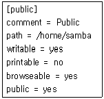
- 리눅스 시스템의 /home/samba 디렉토리를 공유 디렉토리 public으로 사용한다.
- 공유 디렉토리에 쓰기가 가능하다.
- 공유 디렉토리의 내용을 프린트 할 수 없다.
- 공유 디렉토리의 리스트를 보여준다.
(정답률: 9%)
78. NFS서버의 익스포팅 설정파일(/etc/exports)에 다음과 같이 설정되어 있었다. 설명 중 틀린 것은?
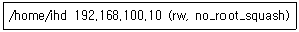
- NFS 마운트는 192.168.100.10 호스트에서만 가능하다.
- NFS 마운트 했을 시 읽기/쓰기 모두 가능하다.
- root권한으로 마운트 하더라도 nobody 사용자로 매핑 된다.
- root권한으로 마운트 하면 root권한으로 접근 된다.
(정답률: 36%)
79. NFS서버에 연결하기 위해 클라이언트에서 마운트 할 때 사용하는 옵션의 설명으로 옳은 것은?
- rsize : NFS서버에 기록할 때 사용하는 바이트 수를 지정한다.
- timeo : 타임아웃이 발생하면 I/O 에러 표시 한다.
- fg : NFS 서버에 타임아웃이 발생되면 즉각 접속을 중지한다.
- soft : 타임아웃이 발생하면 “server not responding” 메시지를 표시하고 계속 재시도 한다.
(정답률: 40%)
80. NFS 서버와 클라이언트의 동작 상태를 보여주는 유틸리티인 nfsstat의 옵션에 대한 설명 중 틀린 것은?
- -c : 클라이언트 상태 출력한다.
- -s : 서버 상태만 출력한다.
- -W : 넓은 포맷으로 출력을 조정하는 옵션이다.
- -w : 좁은 포맷으로 출력을 조정하는 옵션이다.
(정답률: 29%)
81. 다음은 FTP서버 중의 하나인 proftpd의 환경설정 파일에 다음 내용이 설정 되어 있다. 다음 설명 중 옳은 것은?
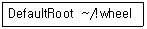
- 모든 사용자는 최상위 디렉토리(/) 접근이 가능 하다.
- 모든 사용자는 자기 홈 디렉토리의 상위 디렉토리 접근이 불가능하다.
- wheel 그룹의 사용자는 최상위 디렉토리(/) 접근이 가능하다.
- 잘못된 설정이다.
(정답률: 7%)
82. /etc/shells파일에 정의되지 않은 쉘을 사용하는 사용자의 FTP 접속을 허용하거나 거부하는 proftpd 환경설정파일에서 지시자는 무엇인가?
- RequireValidShell
- ValidShellRequire
- RequireShells
- DefaultSheell
(정답률: 39%)
83. Proftpd의 설정파일에서 Limit는 하나 또는 둘 이상의 FTP명령어들을 제한을 하기 위하여 사용 된다. Limit를 통해 제안하는 명령어들에 대한 다음 설명 중 적절하지 않은 것은?
- CWD : 디렉토리를 변경하는 경우
- RETR : 서버에서 클라이언트로 파일을 전송하는 경우
- RNTO : 클라이언트가 서버로 파일을 전송하는 경우
- RNFR : 디렉토리의 이름을 바꾸는 경우
(정답률: 23%)
84. 사용자 A가 사용자 B에게 메일을 보내려 한다. 다음 ( )안에 알맞은 프로토콜을 순서대로 나열한 것은?(순서대로 ㉮, ㉯)
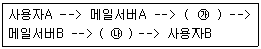
- SMTP, POP3
- POP3, POP3
- SMTP, SMTP
- POP3, SMTP
(정답률: 75%)
85. 메일서버를 운영하기 위해 SMTP, IMAP, POP3 프로토콜을 이용하게 되었다. 각 프로토콜의 포트번호를 바르게 나열한 것은?
- 25 - 139 - 101
- 25 - 134 - 101
- 25 - 143 - 110
- 25 - 139 - 110
(정답률: 알수없음)
86. 다음 중 SMTP(Simple Mail Transfer Protocol)의 특징에 대한 설명이 적절하지 않은 것은?
- TCP/IP의 상위층 응용프로토콜의 하나이다.
- 인터넷에서 전자 우편 기능을 사용하는 프로토콜로 사용된다.
- RFC 822에 규정되어 있다.
- 최근에는 그림과 소리를 메일 메시지에 포함 시킬 수 있다.
(정답률: 5%)
87. 서버관리자 홍길동은 메일서버(mail.ihd.or.kr)와 웹서버(www.ihd.or.kr)를 분리시켰다. 그런데 웹서버에서 ihd@ihd.or.kr으로 메일을 보내면 메일 서버로 가지 않고 /var/spool/mail/ihd에 쌓였다. 이 문제를 해결하기 위해서 다음 중 어떤 파일을 살펴보아야 하는가?
- /etc/mail/access
- /etc/mail/local-host-names
- /etc/aliases
- /etc/virtusertable
(정답률: 25%)
88. 다음은 Sendmail의 설정파일인 sendmail.cf 파일의 일부이다. 이에 대한 설명으로 알맞은 것은?
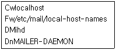
- localhost로 들어오는 메일을 수신한다.
- Fw/etc/mail/local-host-names는 메일서버로 메일을 전송하였으나 자신의 도메인을 인식하지 못한 경우의 설정이다.
- 센드메일이 에러 메시지를 보낼 때 사용하는 사용자 이름은 ihd이다.
- 메일 프로그램을 시작할 때 사용하는 명령을 MAILER-DAEMON으로 지정한다.
(정답률: 알수없음)
89. Sendmail 설정파일(sendmail.cf)은 7개의 섹션으로 이루어져 있다. 다음 중 각 섹션에 대한 설명으로 적절하지 않는 것은?
- Local Info 섹션 : 해당 로컬 호스트의 구성 정보를 정의하는 부분이다.
- Message Precedences 섹션 : 메시지의 우선 순위를 할당할 때 사용된다.
- Rewriting Rules 섹션 : 메일 작성시 헤더를 생성하는 규칙이 정의되어 있다.
- Mailer Definitions 섹션 : Sendmail이 메일 프로그램을 시작할 때 사용하는 명령을 정의한다.
(정답률: 43%)
90. 서버관리자인 홍길동은 pop3 서버를 운영하기 위해서 qpopper을 설치하였다. qpopper의 정상 작동여부를 확인하기 위해서 로그인 후 메일을 읽어 보려 한다. 그러나 접속도구가 없어 telnet을 이용하여 접속 한 후 메일을 확인하였다. 아래 빈칸에 들어갈 값들을 순서대로 나열한 것은?(순서대로 ㉮, ㉯, ㉰, ㉱, ㉲)
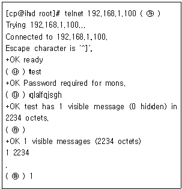
- pop3, pass, user, list, retr
- pop3, user, pass, list, retr
- pop3, user, pass, retr, list
- pop3, pass, user, retr, ,list
(정답률: 36%)
91. sendmail에서 스팸메일 차단을 위해 /etc/mail/access 파일에 사용되는 옵션에 대한 설명이 바르게 된것은?
- DISCARD : 지정된 도메인에게서 무조건 메일 수신 후 RELAY
- 501 : 발신자 주소에 호스트 이름이 없을 경우 메일 수신 거부
- 533 : 지정된 메일 주소와 일치하는 메일 수신 거부
- 550 : 지정된 도메인과 관련된 모든 메일 수신 거부
(정답률: 37%)
92. Sendmail 설정을 마치고 설정의 에러 여부를 점검하기위한 명령어는?
- sendmail -bd
- sendmail -bi
- sendmail -q1h
- sendmail -check
(정답률: 22%)
93. 인터넷 슈퍼데몬(xinetd)를 컴파일하고 설치하려 한다. 환경설정(./configure) 과정에서 hosts.allow 및 hosts.deny파일을 이용하여 접근통제 하기 위해서 추가해야 하는 옵션은 무엇인가?
- --with-tcpwrapper
- --with-hosts
- --with-libwrap
- --with-firewall
(정답률: 8%)
94. 다음은 인터넷 슈퍼데몬(xinetd)의 속성이다. 다음 설명 중 틀린 것은?
- server : 서버 프로그램의 경로이다.
- wait : 스레드에 대한 서비스 동작을 정의한다.
- cps : 다중프로세스 환경에서 서비스에 사용할 CPU 개수이다.
- per_source : 동일 호스트로부터의 서버 접속 수를 설정한다.
(정답률: 32%)
95. xinetd는 일종의 투명 프록시로 사용할 수 있는데, 다른 기계에 대한 서비스 요청을 원하는 포트로 보낼 수 있게 한다. 이와 관련한 다음 설정에서 ( )안에 들어갈 속성은 무엇인가?
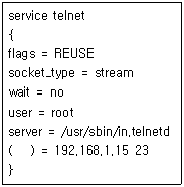
- rewrite
- proxy
- forward
- redirect
(정답률: 27%)
96. 위의 DNS 서버의 forward 영역 파일에 대한 설명으로 적절하지 않는 것은?
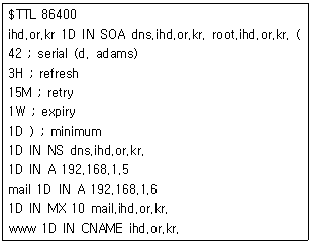
- ihd.or.kr의 네임서버는 dns.ihd.or.kr이라는 이름을 갖는다.
- 메일서버는 mail.ihd.or.kr이며 IP주소는 192.168.1.6 이다.
- ihd.or.kr와 dns.ihd.or.kr의 IP주소는 192.168.1.5 이다.
- ihd.or.kr은 dns.ihd.or.kr 또는 root.ihd.or.kr로도 접근이 가능하다.
(정답률: 58%)
97. 다음은 프락시서버 squid의 설정파일인 squid.conf 파일의 일부이다. 1차 하위 디렉토리의 개수는 16개, 2차 하위 디렉토리의 개수는 256개, 캐쉬 디렉토리의 크기는 최대 500MB로 설정할 때 ( )안에 들어갈 숫자를 순서대로 나열한 것은?
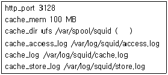
- 500 256 16
- 16 256 500
- 500 16 256
- 256 16 500
(정답률: 34%)
98. 다음 중 NIS 관련 명령어가 아닌 것은?
- ypwhich
- ypmatch
- yppoll
- ypmount
(정답률: 32%)
99. 다음은 DHCP서버 설정파일인 dhcpd.conf파일의 일부분이다. 이 부분에 대한 설명으로 옳은 것은?
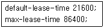
- DHCP클라이언트가 요청하지 않아도 IP를 할당해 주는 최대 시간은 6시간이다.
- DHCP클라이언트에게 할당된 IP는 요청이 있는 한 계속 지속된다.
- DHCP클라이언트에게 할당된 IP는 6시간이 지나면 사용자의 요청과 상관없이 자동적으로 24시간까지 사용할 수 있다.
- DHCP클라이언트에게 할당된 IP는 요청이 있어도 6시간이 지나면 소멸되고 재 할당된다.
(정답률: 40%)
100. 다음 중 CVS의 기능에 대한 설명으로 적절한 것은?
- checkout : 작업 공간 생성
- commit : 작업 내용 저장
- update : 저장소에 작업 파일 업로드
- import : 프로젝트 초기화
(정답률: 25%)
- ㉱: 단순한 일괄처리 시스템에서 멀티프로그래밍 시스템으로 발전하면서 운영체제가 등장하게 됩니다.
- ㉯: 멀티프로그래밍 시스템에서 다중 사용자 시스템으로 발전하면서 시분할 시스템이 등장하게 됩니다.
- ㉰: 다중 사용자 시스템에서 네트워크 환경으로 발전하면서 분산 시스템이 등장하게 됩니다.
- ㉮: 분산 시스템에서 가상화 기술이 발전하면서 가상화 기술이 적용된 클라우드 컴퓨팅 시스템이 등장하게 됩니다.
따라서, 운영체제의 발전 과정은 위와 같이 진행되었습니다.